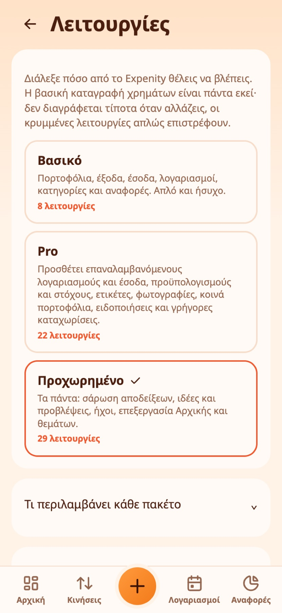
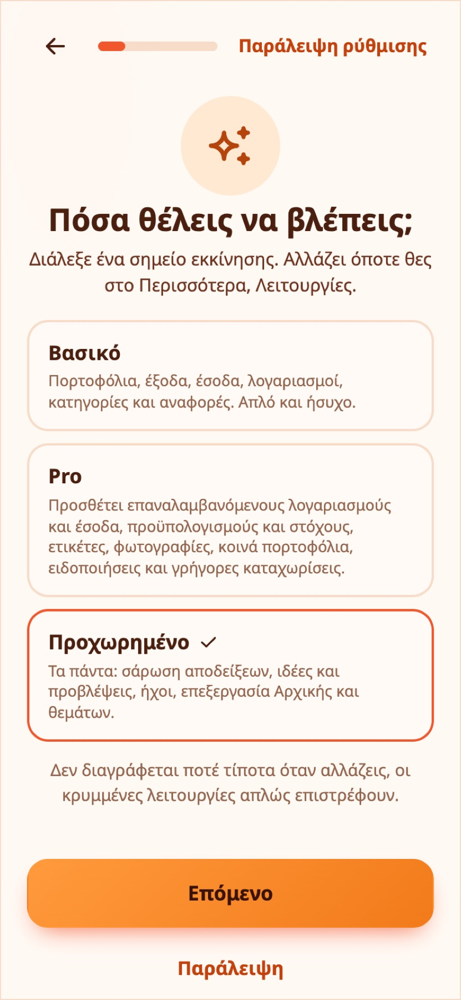

Λειτουργίες και πακέτα
Το Expenity κάνει πολλά. Εσύ αποφασίζετε πόσα βλέπετε. Στο Περισσότερα → Κάν’ το δικό σας → Λειτουργίες διαλέγετε ένα έτοιμο πακέτο, τα συγκρίνετε σε πίνακα ή φτιάχνετε δικό σας συνδυασμό με διακόπτες.

Τα τρία πακέτα#
- Βασικό: πορτοφόλια, έξοδα, έσοδα, λογαριασμοί, κατηγορίες και αναφορές. Απλό και ήσυχο.
- Pro: όλα του Βασικού, συν επαναλαμβανόμενους λογαριασμούς και έσοδα, προϋπολογισμούς και στόχους, ετικέτες, γρήγορες καταχωρίσεις, φωτογραφίες σε εγγραφές, εικόνα προφίλ, ειδοποιήσεις, κοινά πορτοφόλια, φρουρό διπλότυπων, ημερήσιο ποσό, φίλτρα αναζήτησης, πρόσφατα διαγραμμένα, ειδοποιήσεις αύξησης τιμής και υπενθυμίσεις προχείρων.
- Προχωρημένο: όλα του Pro, συν σάρωση αποδείξεων, ιδέες, ασφαλή για δαπάνη ποσά, ήχους, επεξεργασία Αρχικής, επεξεργασία θεμάτων και σερί.
Η πρώτη ρύθμιση σε ρωτά ποιο θέλετε και προεπιλέγεται το Προχωρημένο, ώστε να μην κρύβεται τίποτα αν δεν το επιλέξετε. Η αλλαγή δεν διαγράφει ποτέ τίποτα: μια κρυμμένη λειτουργία απλώς εξαφανίζεται από τις οθόνες και όσα έχετε καταχωρίσει επιστρέφουν όταν την ενεργοποιήσετε ξανά.

Σύγκριση και προσαρμογή#
- Το Τι περιλαμβάνει κάθε πακέτο ανοίγει πίνακα με ένα σημάδι για κάθε λειτουργία σε κάθε πακέτο.
- Το Φτιάξτε το δικό σας έχει διακόπτη για κάθε προαιρετική λειτουργία. Αλλάξτε οποιαδήποτε και το πακέτο σας γίνεται Προσαρμοσμένο.
- Κάποια πράγματα είναι πάντα ενεργά: πορτοφόλια, έξοδα, έσοδα και μεταφορές, κατηγορίες, λογαριασμοί με ημερομηνία λήξης, Κινήσεις και αναζήτηση, Αναφορές, θέματα και γλώσσες, αντίγραφο και εξαγωγή.
Πακέτα και οδηγοί#
Οι οδηγοί και τα εικονίδια βοήθειας ακολουθούν το πακέτο σας: μια λειτουργία που είναι κρυμμένη δεν έχει οδηγό ούτε εικονίδιο. Δείτε Οδηγοί και βοήθεια.
Χρειάζεστε ακόμα βοήθεια; Δείτε τις FAQ, ή ρωτήστε στο GitHub.